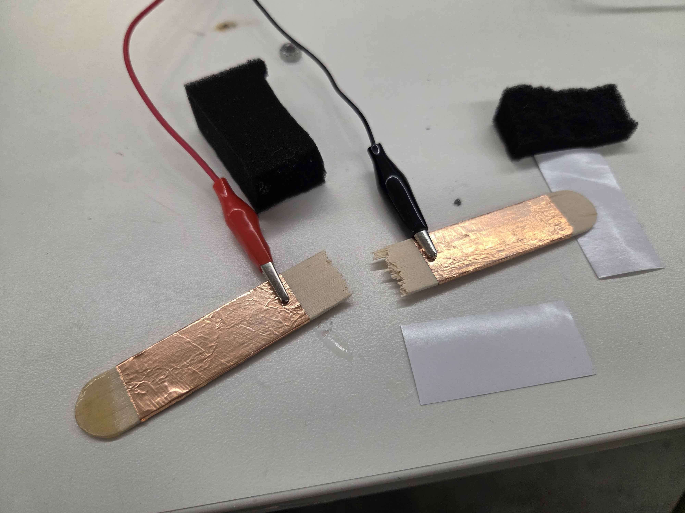
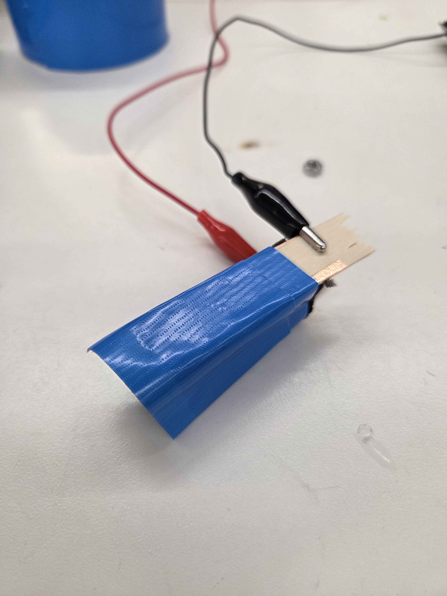
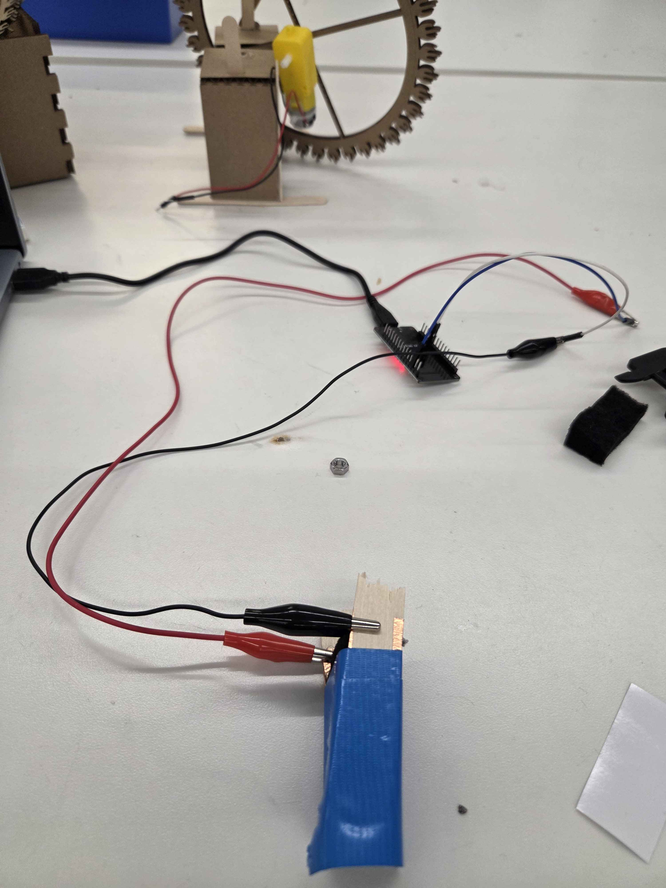
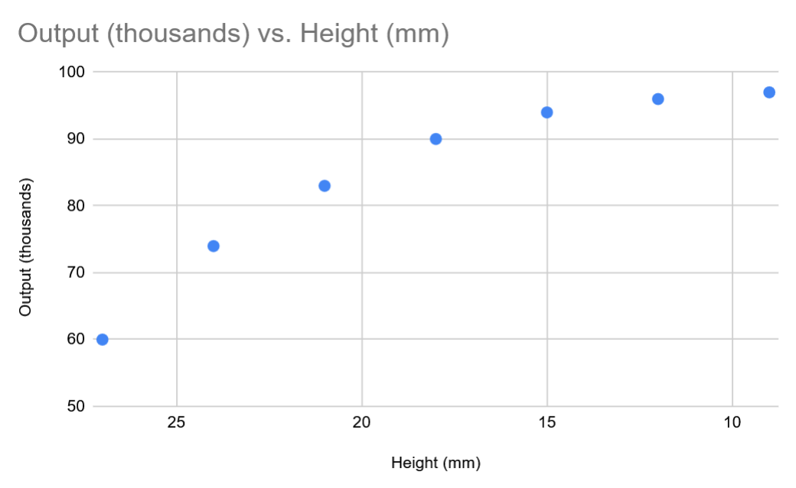

Building the Capacitive Sensor

For my sensor, I chose to measure force and touch. The set up for this kind of sensor is quite simple. As with any capacitive sensor, you need two sections of (in our case) copper which will generate the electric field between themselves. For this, I prepared by simply attaching the copper to wooden sticks so that they would have some stability. Next, I attached the alligator clips to the copper on one end, and to the pin end of pin-socket wires on the other. The socket side would attach to the A3 and tx-rx pins of Arduino.

At this point, all of the components of the sensor are set up; they just need to be arranged into a productive system. Because I want to measure force, there needs to be some object in between the two plates that creates a distance which can be lessened with pressure. The solution is again, quite simple, and involves simply placing some foam between the two plates and taping them together so that their distance (and thus capacity) doesn't change too much without input. The total sensor, attached to the arduino board, can be seen below.

Graphing the Outputs

Having built the sensor, we now need to calibrate it and understand (abstractly, at least) the values it's producing and what can be done with them. For this, I borrowed the tx_rx code posted on the website and uploaded it to my esp32 dev board. This program outputs a (rather abstract) indication of the total capacity in between the two parallel plates by outputting a number that grows larger as the capacitance does. Fortunately, all seems to be working well, and the capacitance grows when one presses on the sensor, thereby pushing the plates closer together. As one would expect, the graph is nonlinear, with the change in capacitance relative to the change in distance decreasing with each iteration. Put more simply, capacitance increases less as the plates are pushed closer to each other; the biggest increases occur at the beginning.